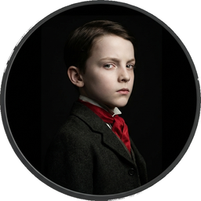
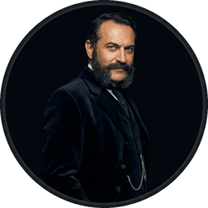

Cast of Characters
Click to hear their voice


PART I
At the little town of Vevey, in Switzerland, there is a particularly comfortable hotel. There are, indeed, many hotels, for the entertainment of tourists is the business of the place, which, as many travelers will remember, is seated upon the edge of a remarkably blue lake—a lake that it behooves every tourist to visit. The shore of the lake presents an unbroken array of establishments of this order, of every category, from the “grand hotel” of the newest fashion, with a chalk-white front, a hundred balconies, and a dozen flags flying from its roof, to the little Swiss pension of an elder day, with its name inscribed in German-looking lettering upon a pink or yellow wall and an awkward summerhouse in the angle of the garden. One of the hotels at Vevey, however, is famous, even classical, being distinguished from many of its upstart neighbors by an air both of luxury and of maturity. In this region, in the month of June, American travelers are extremely numerous; it may be said, indeed, that Vevey assumes at this period some of the characteristics of an American watering place. There are sights and sounds which evoke a vision, an echo, of Newport and Saratoga. There is a flitting hither and thither of “stylish” young girls, a rustling of muslin flounces, a rattle of dance music in the morning hours, a sound of high-pitched voices at all times. You receive an impression of these things at the excellent inn of the “Trois Couronnes” and are transported in fancy to the Ocean House or to Congress Hall. But at the “Trois Couronnes,” it must be added, there are other features that are much at variance with these suggestions: neat German waiters, who look like secretaries of legation; Russian princesses sitting in the garden; little Polish boys walking about held by the hand, with their governors; a view of the sunny crest of the Dent du Midi and the picturesque towers of the Castle of Chillon.
I hardly know whether it was the analogies or the differences that were uppermost in the mind of a young American, who, two or three years ago, sat in the garden of the “Trois Couronnes,” looking about him, rather idly, at some of the graceful objects I have mentioned. It was a beautiful summer morning, and in whatever fashion the young American looked at things, they must have seemed to him charming. He had come from Geneva the day before by the little steamer, to see his aunt, who was staying at the hotel—Geneva having been for a long time his place of residence. But his aunt had a headache—his aunt had almost always a headache—and now she was shut up in her room, smelling camphor, so that he was at liberty to wander about. He was some seven-and-twenty years of age; when his friends spoke of him, they usually said that he was at Geneva “studying.” When his enemies spoke of him, they said—but, after all, he had no enemies; he was an extremely amiable fellow, and universally liked. What I should say is, simply, that when certain persons spoke of him they affirmed that the reason of his spending so much time at Geneva was that he was extremely devoted to a lady who lived there—a foreign lady—a person older than himself. Very few Americans—indeed, I think none—had ever seen this lady, about whom there were some singular stories. But Winterbourne had an old attachment for the little metropolis of Calvinism; he had been put to school there as a boy, and he had afterward gone to college there—circumstances which had led to his forming a great many youthful friendships. Many of these he had kept, and they were a source of great satisfaction to him.
After knocking at his aunt’s door and learning that she was indisposed, he had taken a walk about the town, and then he had come in to his breakfast. He had now finished his breakfast; but he was drinking a small cup of coffee, which had been served to him on a little table in the garden by one of the waiters who looked like an attache. At last he finished his coffee and lit a cigarette. Presently a small boy came walking along the path—an urchin of nine or ten. The child, who was diminutive for his years, had an aged expression of countenance, a pale complexion, and sharp little features. He was dressed in knickerbockers, with red stockings, which displayed his poor little spindle-shanks; he also wore a brilliant red cravat. He carried in his hand a long alpenstock, the sharp point of which he thrust into everything that he approached—the flowerbeds, the garden benches, the trains of the ladies’ dresses. In front of Winterbourne he paused, looking at him with a pair of bright, penetrating little eyes.
“Will you give me a lump of sugar?” he asked in a sharp, hard little voice—a voice immature and yet, somehow, not young.
Winterbourne glanced at the small table near him, on which his coffee service rested, and saw that several morsels of sugar remained. “Yes, you may take one,” he answered; “but I don’t think sugar is good for little boys.”
This little boy stepped forward and carefully selected three of the coveted fragments, two of which he buried in the pocket of his knickerbockers, depositing the other as promptly in another place. He poked his alpenstock, lance-fashion, into Winterbourne’s bench and tried to crack the lump of sugar with his teeth.
“Oh, blazes; it’s har-r-d!” he exclaimed, pronouncing the adjective in a peculiar manner.
Winterbourne had immediately perceived that he might have the honor of claiming him as a fellow countryman. “Take care you don’t hurt your teeth,” he said, paternally.
“I haven’t got any teeth to hurt. They have all come out. I have only got seven teeth. My mother counted them last night, and one came out right afterward. She said she’d slap me if any more came out. I can’t help it. It’s this old Europe. It’s the climate that makes them come out. In America they didn’t come out. It’s these hotels.”
Winterbourne was much amused. “If you eat three lumps of sugar, your mother will certainly slap you,” he said.
“She’s got to give me some candy, then,” rejoined his young interlocutor. “I can’t get any candy here—any American candy. American candy’s the best candy.”
“And are American little boys the best little boys?” asked Winterbourne.
“I don’t know. I’m an American boy,” said the child.
“I see you are one of the best!” laughed Winterbourne.
“Are you an American man?” pursued this vivacious infant. And then, on Winterbourne’s affirmative reply—“American men are the best,” he declared.
His companion thanked him for the compliment, and the child, who had now got astride of his alpenstock, stood looking about him, while he attacked a second lump of sugar. Winterbourne wondered if he himself had been like this in his infancy, for he had been brought to Europe at about this age.
“Here comes my sister!” cried the child in a moment. “She’s an American girl.”
Winterbourne looked along the path and saw a beautiful young lady advancing. “American girls are the best girls,” he said cheerfully to his young companion.
“My sister ain’t the best!” the child declared. “She’s always blowing at me.”
“I imagine that is your fault, not hers,” said Winterbourne. The young lady meanwhile had drawn near. She was dressed in white muslin, with a hundred frills and flounces, and knots of pale-colored ribbon. She was bareheaded, but she balanced in her hand a large parasol, with a deep border of embroidery; and she was strikingly, admirably pretty. “How pretty they are!” thought Winterbourne, straightening himself in his seat, as if he were prepared to rise.
The young lady paused in front of his bench, near the parapet of the garden, which overlooked the lake. The little boy had now converted his alpenstock into a vaulting pole, by the aid of which he was springing about in the gravel and kicking it up not a little.
“Randolph,” said the young lady, “what ARE you doing?”
“I’m going up the Alps,” replied Randolph. “This is the way!” And he gave another little jump, scattering the pebbles about Winterbourne’s ears.
“That’s the way they come down,” said Winterbourne.
“He’s an American man!” cried Randolph, in his little hard voice.
The young lady gave no heed to this announcement, but looked straight at her brother. “Well, I guess you had better be quiet,” she simply observed.
It seemed to Winterbourne that he had been in a manner presented. He got up and stepped slowly toward the young girl, throwing away his cigarette. “This little boy and I have made acquaintance,” he said, with great civility. In Geneva, as he had been perfectly aware, a young man was not at liberty to speak to a young unmarried lady except under certain rarely occurring conditions; but here at Vevey, what conditions could be better than these?—a pretty American girl coming and standing in front of you in a garden. This pretty American girl, however, on hearing Winterbourne’s observation, simply glanced at him; she then turned her head and looked over the parapet, at the lake and the opposite mountains. He wondered whether he had gone too far, but he decided that he must advance farther, rather than retreat. While he was thinking of something else to say, the young lady turned to the little boy again.
“I should like to know where you got that pole,” she said.
“I bought it,” responded Randolph.
“You don’t mean to say you’re going to take it to Italy?”
“Yes, I am going to take it to Italy,” the child declared.
The young girl glanced over the front of her dress and smoothed out a knot or two of ribbon. Then she rested her eyes upon the prospect again. “Well, I guess you had better leave it somewhere,” she said after a moment.
“Are you going to Italy?” Winterbourne inquired in a tone of great respect.
The young lady glanced at him again. “Yes, sir,” she replied. And she said nothing more.
“Are you—a—going over the Simplon?” Winterbourne pursued, a little embarrassed.
“I don’t know,” she said. “I suppose it’s some mountain. Randolph, what mountain are we going over?”
“Going where?” the child demanded.
“To Italy,” Winterbourne explained.
“I don’t know,” said Randolph. “I don’t want to go to Italy. I want to go to America.”
“Oh, Italy is a beautiful place!” rejoined the young man.
“Can you get candy there?” Randolph loudly inquired.
“I hope not,” said his sister. “I guess you have had enough candy, and mother thinks so too.”
“I haven’t had any for ever so long—for a hundred weeks!” cried the boy, still jumping about.
The young lady inspected her flounces and smoothed her ribbons again; and Winterbourne presently risked an observation upon the beauty of the view. He was ceasing to be embarrassed, for he had begun to perceive that she was not in the least embarrassed herself. There had not been the slightest alteration in her charming complexion; she was evidently neither offended nor flattered. If she looked another way when he spoke to her, and seemed not particularly to hear him, this was simply her habit, her manner. Yet, as he talked a little more and pointed out some of the objects of interest in the view, with which she appeared quite unacquainted, she gradually gave him more of the benefit of her glance; and then he saw that this glance was perfectly direct and unshrinking. It was not, however, what would have been called an immodest glance, for the young girl’s eyes were singularly honest and fresh. They were wonderfully pretty eyes; and, indeed, Winterbourne had not seen for a long time anything prettier than his fair countrywoman’s various features—her complexion, her nose, her ears, her teeth. He had a great relish for feminine beauty; he was addicted to observing and analyzing it; and as regards this young lady’s face he made several observations. It was not at all insipid, but it was not exactly expressive; and though it was eminently delicate, Winterbourne mentally accused it—very forgivingly—of a want of finish. He thought it very possible that Master Randolph’s sister was a coquette; he was sure she had a spirit of her own; but in her bright, sweet, superficial little visage there was no mockery, no irony. Before long it became obvious that she was much disposed toward conversation. She told him that they were going to Rome for the winter—she and her mother and Randolph. She asked him if he was a “real American”; she shouldn’t have taken him for one; he seemed more like a German—this was said after a little hesitation—especially when he spoke. Winterbourne, laughing, answered that he had met Germans who spoke like Americans, but that he had not, so far as he remembered, met an American who spoke like a German. Then he asked her if she should not be more comfortable in sitting upon the bench which he had just quitted. She answered that she liked standing up and walking about; but she presently sat down. She told him she was from New York State—“if you know where that is.” Winterbourne learned more about her by catching hold of her small, slippery brother and making him stand a few minutes by his side.
“Tell me your name, my boy,” he said.
“Randolph C. Miller,” said the boy sharply. “And I’ll tell you her name;” and he leveled his alpenstock at his sister.
“You had better wait till you are asked!” said this young lady calmly.
“I should like very much to know your name,” said Winterbourne.
“Her name is Daisy Miller!” cried the child. “But that isn’t her real name; that isn’t her name on her cards.”
“It’s a pity you haven’t got one of my cards!” said Miss Miller.
“Her real name is Annie P. Miller,” the boy went on.
“Ask him HIS name,” said his sister, indicating Winterbourne.
But on this point Randolph seemed perfectly indifferent; he continued to supply information with regard to his own family. “My father’s name is Ezra B. Miller,” he announced. “My father ain’t in Europe; my father’s in a better place than Europe.”
Winterbourne imagined for a moment that this was the manner in which the child had been taught to intimate that Mr. Miller had been removed to the sphere of celestial reward. But Randolph immediately added, “My father’s in Schenectady. He’s got a big business. My father’s rich, you bet!”
“Well!” ejaculated Miss Miller, lowering her parasol and looking at the embroidered border. Winterbourne presently released the child, who departed, dragging his alpenstock along the path. “He doesn’t like Europe,” said the young girl. “He wants to go back.”
“To Schenectady, you mean?”
“Yes; he wants to go right home. He hasn’t got any boys here. There is one boy here, but he always goes round with a teacher; they won’t let him play.”
“And your brother hasn’t any teacher?” Winterbourne inquired.
“Mother thought of getting him one, to travel round with us. There was a lady told her of a very good teacher; an American lady—perhaps you know her—Mrs. Sanders. I think she came from Boston. She told her of this teacher, and we thought of getting him to travel round with us. But Randolph said he didn’t want a teacher traveling round with us. He said he wouldn’t have lessons when he was in the cars. And we ARE in the cars about half the time. There was an English lady we met in the cars—I think her name was Miss Featherstone; perhaps you know her. She wanted to know why I didn’t give Randolph lessons—give him ‘instruction,’ she called it. I guess he could give me more instruction than I could give him. He’s very smart.”
“Yes,” said Winterbourne; “he seems very smart.”
“Mother’s going to get a teacher for him as soon as we get to Italy. Can you get good teachers in Italy?”
“Very good, I should think,” said Winterbourne.
“Or else she’s going to find some school. He ought to learn some more. He’s only nine. He’s going to college.” And in this way Miss Miller continued to converse upon the affairs of her family and upon other topics. She sat there with her extremely pretty hands, ornamented with very brilliant rings, folded in her lap, and with her pretty eyes now resting upon those of Winterbourne, now wandering over the garden, the people who passed by, and the beautiful view. She talked to Winterbourne as if she had known him a long time. He found it very pleasant. It was many years since he had heard a young girl talk so much. It might have been said of this unknown young lady, who had come and sat down beside him upon a bench, that she chattered. She was very quiet; she sat in a charming, tranquil attitude; but her lips and her eyes were constantly moving. She had a soft, slender, agreeable voice, and her tone was decidedly sociable. She gave Winterbourne a history of her movements and intentions and those of her mother and brother, in Europe, and enumerated, in particular, the various hotels at which they had stopped. “That English lady in the cars,” she said—“Miss Featherstone—asked me if we didn’t all live in hotels in America. I told her I had never been in so many hotels in my life as since I came to Europe. I have never seen so many—it’s nothing but hotels.” But Miss Miller did not make this remark with a querulous accent; she appeared to be in the best humor with everything. She declared that the hotels were very good, when once you got used to their ways, and that Europe was perfectly sweet. She was not disappointed—not a bit. Perhaps it was because she had heard so much about it before. She had ever so many intimate friends that had been there ever so many times. And then she had had ever so many dresses and things from Paris. Whenever she put on a Paris dress she felt as if she were in Europe.
“It was a kind of a wishing cap,” said Winterbourne.
“Yes,” said Miss Miller without examining this analogy; “it always made me wish I was here. But I needn’t have done that for dresses. I am sure they send all the pretty ones to America; you see the most frightful things here. The only thing I don’t like,” she proceeded, “is the society. There isn’t any society; or, if there is, I don’t know where it keeps itself. Do you? I suppose there is some society somewhere, but I haven’t seen anything of it. I’m very fond of society, and I have always had a great deal of it. I don’t mean only in Schenectady, but in New York. I used to go to New York every winter. In New York I had lots of society. Last winter I had seventeen dinners given me; and three of them were by gentlemen,” added Daisy Miller. “I have more friends in New York than in Schenectady—more gentleman friends; and more young lady friends too,” she resumed in a moment. She paused again for an instant; she was looking at Winterbourne with all her prettiness in her lively eyes and in her light, slightly monotonous smile. “I have always had,” she said, “a great deal of gentlemen’s society.”
Poor Winterbourne was amused, perplexed, and decidedly charmed. He had never yet heard a young girl express herself in just this fashion; never, at least, save in cases where to say such things seemed a kind of demonstrative evidence of a certain laxity of deportment. And yet was he to accuse Miss Daisy Miller of actual or potential inconduite, as they said at Geneva? He felt that he had lived at Geneva so long that he had lost a good deal; he had become dishabituated to the American tone. Never, indeed, since he had grown old enough to appreciate things, had he encountered a young American girl of so pronounced a type as this. Certainly she was very charming, but how deucedly sociable! Was she simply a pretty girl from New York State? Were they all like that, the pretty girls who had a good deal of gentlemen’s society? Or was she also a designing, an audacious, an unscrupulous young person? Winterbourne had lost his instinct in this matter, and his reason could not help him. Miss Daisy Miller looked extremely innocent. Some people had told him that, after all, American girls were exceedingly innocent; and others had told him that, after all, they were not. He was inclined to think Miss Daisy Miller was a flirt—a pretty American flirt. He had never, as yet, had any relations with young ladies of this category. He had known, here in Europe, two or three women—persons older than Miss Daisy Miller, and provided, for respectability’s sake, with husbands—who were great coquettes—dangerous, terrible women, with whom one’s relations were liable to take a serious turn. But this young girl was not a coquette in that sense; she was very unsophisticated; she was only a pretty American flirt. Winterbourne was almost grateful for having found the formula that applied to Miss Daisy Miller. He leaned back in his seat; he remarked to himself that she had the most charming nose he had ever seen; he wondered what were the regular conditions and limitations of one’s intercourse with a pretty American flirt. It presently became apparent that he was on the way to learn.
“Have you been to that old castle?” asked the young girl, pointing with her parasol to the far-gleaming walls of the Chateau de Chillon.
“Yes, formerly, more than once,” said Winterbourne. “You too, I suppose, have seen it?”
“No; we haven’t been there. I want to go there dreadfully. Of course I mean to go there. I wouldn’t go away from here without having seen that old castle.”
“It’s a very pretty excursion,” said Winterbourne, “and very easy to make. You can drive, you know, or you can go by the little steamer.”
“You can go in the cars,” said Miss Miller.
“Yes; you can go in the cars,” Winterbourne assented.
“Our courier says they take you right up to the castle,” the young girl continued. “We were going last week, but my mother gave out. She suffers dreadfully from dyspepsia. She said she couldn’t go. Randolph wouldn’t go either; he says he doesn’t think much of old castles. But I guess we’ll go this week, if we can get Randolph.”
“Your brother is not interested in ancient monuments?” Winterbourne inquired, smiling.
“He says he don’t care much about old castles. He’s only nine. He wants to stay at the hotel. Mother’s afraid to leave him alone, and the courier won’t stay with him; so we haven’t been to many places. But it will be too bad if we don’t go up there.” And Miss Miller pointed again at the Chateau de Chillon.
“I should think it might be arranged,” said Winterbourne. “Couldn’t you get some one to stay for the afternoon with Randolph?”
Miss Miller looked at him a moment, and then, very placidly, “I wish YOU would stay with him!” she said.
Winterbourne hesitated a moment. “I should much rather go to Chillon with you.”
“With me?” asked the young girl with the same placidity.
She didn’t rise, blushing, as a young girl at Geneva would have done; and yet Winterbourne, conscious that he had been very bold, thought it possible she was offended. “With your mother,” he answered very respectfully.
But it seemed that both his audacity and his respect were lost upon Miss Daisy Miller. “I guess my mother won’t go, after all,” she said. “She don’t like to ride round in the afternoon. But did you really mean what you said just now—that you would like to go up there?”
“Most earnestly,” Winterbourne declared.
“Then we may arrange it. If mother will stay with Randolph, I guess Eugenio will.”
“Eugenio?” the young man inquired.
“Eugenio’s our courier. He doesn’t like to stay with Randolph; he’s the most fastidious man I ever saw. But he’s a splendid courier. I guess he’ll stay at home with Randolph if mother does, and then we can go to the castle.”
Winterbourne reflected for an instant as lucidly as possible—“we” could only mean Miss Daisy Miller and himself. This program seemed almost too agreeable for credence; he felt as if he ought to kiss the young lady’s hand. Possibly he would have done so and quite spoiled the project, but at this moment another person, presumably Eugenio, appeared. A tall, handsome man, with superb whiskers, wearing a velvet morning coat and a brilliant watch chain, approached Miss Miller, looking sharply at her companion. “Oh, Eugenio!” said Miss Miller with the friendliest accent.
Eugenio had looked at Winterbourne from head to foot; he now bowed gravely to the young lady. “I have the honor to inform mademoiselle that luncheon is upon the table.”
Miss Miller slowly rose. “See here, Eugenio!” she said; “I’m going to that old castle, anyway.”
“To the Chateau de Chillon, mademoiselle?” the courier inquired. “Mademoiselle has made arrangements?” he added in a tone which struck Winterbourne as very impertinent.
Eugenio’s tone apparently threw, even to Miss Miller’s own apprehension, a slightly ironical light upon the young girl’s situation. She turned to Winterbourne, blushing a little—a very little. “You won’t back out?” she said.
“I shall not be happy till we go!” he protested.
“And you are staying in this hotel?” she went on. “And you are really an American?”
The courier stood looking at Winterbourne offensively. The young man, at least, thought his manner of looking an offense to Miss Miller; it conveyed an imputation that she “picked up” acquaintances. “I shall have the honor of presenting to you a person who will tell you all about me,” he said, smiling and referring to his aunt.
“Oh, well, we’ll go some day,” said Miss Miller. And she gave him a smile and turned away. She put up her parasol and walked back to the inn beside Eugenio. Winterbourne stood looking after her; and as she moved away, drawing her muslin furbelows over the gravel, said to himself that she had the tournure of a princess.
He had, however, engaged to do more than proved feasible, in promising to present his aunt, Mrs. Costello, to Miss Daisy Miller. As soon as the former lady had got better of her headache, he waited upon her in her apartment; and, after the proper inquiries in regard to her health, he asked her if she had observed in the hotel an American family—a mamma, a daughter, and a little boy.
“And a courier?” said Mrs. Costello. “Oh yes, I have observed them. Seen them—heard them—and kept out of their way.” Mrs. Costello was a widow with a fortune; a person of much distinction, who frequently intimated that, if she were not so dreadfully liable to sick headaches, she would probably have left a deeper impress upon her time. She had a long, pale face, a high nose, and a great deal of very striking white hair, which she wore in large puffs and rouleaux over the top of her head. She had two sons married in New York and another who was now in Europe. This young man was amusing himself at Hamburg, and, though he was on his travels, was rarely perceived to visit any particular city at the moment selected by his mother for her own appearance there. Her nephew, who had come up to Vevey expressly to see her, was therefore more attentive than those who, as she said, were nearer to her. He had imbibed at Geneva the idea that one must always be attentive to one’s aunt. Mrs. Costello had not seen him for many years, and she was greatly pleased with him, manifesting her approbation by initiating him into many of the secrets of that social sway which, as she gave him to understand, she exerted in the American capital. She admitted that she was very exclusive; but, if he were acquainted with New York, he would see that one had to be. And her picture of the minutely hierarchical constitution of the society of that city, which she presented to him in many different lights, was, to Winterbourne’s imagination, almost oppressively striking.
He immediately perceived, from her tone, that Miss Daisy Miller’s place in the social scale was low. “I am afraid you don’t approve of them,” he said.
“They are very common,” Mrs. Costello declared. “They are the sort of Americans that one does one’s duty by not—not accepting.”
“Ah, you don’t accept them?” said the young man.
“I can’t, my dear Frederick. I would if I could, but I can’t.”
“The young girl is very pretty,” said Winterbourne in a moment.
“Of course she’s pretty. But she is very common.”
“I see what you mean, of course,” said Winterbourne after another pause.
“She has that charming look that they all have,” his aunt resumed. “I can’t think where they pick it up; and she dresses in perfection—no, you don’t know how well she dresses. I can’t think where they get their taste.”
“But, my dear aunt, she is not, after all, a Comanche savage.”
“She is a young lady,” said Mrs. Costello, “who has an intimacy with her mamma’s courier.”
“An intimacy with the courier?” the young man demanded.
“Oh, the mother is just as bad! They treat the courier like a familiar friend—like a gentleman. I shouldn’t wonder if he dines with them. Very likely they have never seen a man with such good manners, such fine clothes, so like a gentleman. He probably corresponds to the young lady’s idea of a count. He sits with them in the garden in the evening. I think he smokes.”
Winterbourne listened with interest to these disclosures; they helped him to make up his mind about Miss Daisy. Evidently she was rather wild. “Well,” he said, “I am not a courier, and yet she was very charming to me.”
“You had better have said at first,” said Mrs. Costello with dignity, “that you had made her acquaintance.”
“We simply met in the garden, and we talked a bit.”
“Tout bonnement! And pray what did you say?”
“I said I should take the liberty of introducing her to my admirable aunt.”
“I am much obliged to you.”
“It was to guarantee my respectability,” said Winterbourne.
“And pray who is to guarantee hers?”
“Ah, you are cruel!” said the young man. “She’s a very nice young girl.”
“You don’t say that as if you believed it,” Mrs. Costello observed.
“She is completely uncultivated,” Winterbourne went on. “But she is wonderfully pretty, and, in short, she is very nice. To prove that I believe it, I am going to take her to the Chateau de Chillon.”
“You two are going off there together? I should say it proved just the contrary. How long had you known her, may I ask, when this interesting project was formed? You haven’t been twenty-four hours in the house.”
“I have known her half an hour!” said Winterbourne, smiling.
“Dear me!” cried Mrs. Costello. “What a dreadful girl!”
Her nephew was silent for some moments. “You really think, then,” he began earnestly, and with a desire for trustworthy information—“you really think that—” But he paused again.
“Think what, sir?” said his aunt.
“That she is the sort of young lady who expects a man, sooner or later, to carry her off?”
“I haven’t the least idea what such young ladies expect a man to do. But I really think that you had better not meddle with little American girls that are uncultivated, as you call them. You have lived too long out of the country. You will be sure to make some great mistake. You are too innocent.”
“My dear aunt, I am not so innocent,” said Winterbourne, smiling and curling his mustache.
“You are guilty too, then!”
Winterbourne continued to curl his mustache meditatively. “You won’t let the poor girl know you then?” he asked at last.
“Is it literally true that she is going to the Chateau de Chillon with you?”
“I think that she fully intends it.”
“Then, my dear Frederick,” said Mrs. Costello, “I must decline the honor of her acquaintance. I am an old woman, but I am not too old, thank Heaven, to be shocked!”
“But don’t they all do these things—the young girls in America?” Winterbourne inquired.
Mrs. Costello stared a moment. “I should like to see my granddaughters do them!” she declared grimly.
This seemed to throw some light upon the matter, for Winterbourne remembered to have heard that his pretty cousins in New York were “tremendous flirts.” If, therefore, Miss Daisy Miller exceeded the liberal margin allowed to these young ladies, it was probable that anything might be expected of her. Winterbourne was impatient to see her again, and he was vexed with himself that, by instinct, he should not appreciate her justly.
Though he was impatient to see her, he hardly knew what he should say to her about his aunt’s refusal to become acquainted with her; but he discovered, promptly enough, that with Miss Daisy Miller there was no great need of walking on tiptoe. He found her that evening in the garden, wandering about in the warm starlight like an indolent sylph, and swinging to and fro the largest fan he had ever beheld. It was ten o’clock. He had dined with his aunt, had been sitting with her since dinner, and had just taken leave of her till the morrow. Miss Daisy Miller seemed very glad to see him; she declared it was the longest evening she had ever passed.
“Have you been all alone?” he asked.
“I have been walking round with mother. But mother gets tired walking round,” she answered.
“Has she gone to bed?”
“No; she doesn’t like to go to bed,” said the young girl. “She doesn’t sleep—not three hours. She says she doesn’t know how she lives. She’s dreadfully nervous. I guess she sleeps more than she thinks. She’s gone somewhere after Randolph; she wants to try to get him to go to bed. He doesn’t like to go to bed.”
“Let us hope she will persuade him,” observed Winterbourne.
“She will talk to him all she can; but he doesn’t like her to talk to him,” said Miss Daisy, opening her fan. “She’s going to try to get Eugenio to talk to him. But he isn’t afraid of Eugenio. Eugenio’s a splendid courier, but he can’t make much impression on Randolph! I don’t believe he’ll go to bed before eleven.” It appeared that Randolph’s vigil was in fact triumphantly prolonged, for Winterbourne strolled about with the young girl for some time without meeting her mother. “I have been looking round for that lady you want to introduce me to,” his companion resumed. “She’s your aunt.” Then, on Winterbourne’s admitting the fact and expressing some curiosity as to how she had learned it, she said she had heard all about Mrs. Costello from the chambermaid. She was very quiet and very comme il faut; she wore white puffs; she spoke to no one, and she never dined at the table d’hote. Every two days she had a headache. “I think that’s a lovely description, headache and all!” said Miss Daisy, chattering along in her thin, gay voice. “I want to know her ever so much. I know just what YOUR aunt would be; I know I should like her. She would be very exclusive. I like a lady to be exclusive; I’m dying to be exclusive myself. Well, we ARE exclusive, mother and I. We don’t speak to everyone—or they don’t speak to us. I suppose it’s about the same thing. Anyway, I shall be ever so glad to know your aunt.”
Winterbourne was embarrassed. “She would be most happy,” he said; “but I am afraid those headaches will interfere.”
The young girl looked at him through the dusk. “But I suppose she doesn’t have a headache every day,” she said sympathetically.
Winterbourne was silent a moment. “She tells me she does,” he answered at last, not knowing what to say.
Miss Daisy Miller stopped and stood looking at him. Her prettiness was still visible in the darkness; she was opening and closing her enormous fan. “She doesn’t want to know me!” she said suddenly. “Why don’t you say so? You needn’t be afraid. I’m not afraid!” And she gave a little laugh.
Winterbourne fancied there was a tremor in her voice; he was touched, shocked, mortified by it. “My dear young lady,” he protested, “she knows no one. It’s her wretched health.”
The young girl walked on a few steps, laughing still. “You needn’t be afraid,” she repeated. “Why should she want to know me?” Then she paused again; she was close to the parapet of the garden, and in front of her was the starlit lake. There was a vague sheen upon its surface, and in the distance were dimly seen mountain forms. Daisy Miller looked out upon the mysterious prospect and then she gave another little laugh. “Gracious! she IS exclusive!” she said. Winterbourne wondered whether she was seriously wounded, and for a moment almost wished that her sense of injury might be such as to make it becoming in him to attempt to reassure and comfort her. He had a pleasant sense that she would be very approachable for consolatory purposes. He felt then, for the instant, quite ready to sacrifice his aunt, conversationally; to admit that she was a proud, rude woman, and to declare that they needn’t mind her. But before he had time to commit himself to this perilous mixture of gallantry and impiety, the young lady, resuming her walk, gave an exclamation in quite another tone. “Well, here’s Mother! I guess she hasn’t got Randolph to go to bed.” The figure of a lady appeared at a distance, very indistinct in the darkness, and advancing with a slow and wavering movement. Suddenly it seemed to pause.
“Are you sure it is your mother? Can you distinguish her in this thick dusk?” Winterbourne asked.
“Well!” cried Miss Daisy Miller with a laugh; “I guess I know my own mother. And when she has got on my shawl, too! She is always wearing my things.”
The lady in question, ceasing to advance, hovered vaguely about the spot at which she had checked her steps.
“I am afraid your mother doesn’t see you,” said Winterbourne. “Or perhaps,” he added, thinking, with Miss Miller, the joke permissible—“perhaps she feels guilty about your shawl.”
“Oh, it’s a fearful old thing!” the young girl replied serenely. “I told her she could wear it. She won’t come here because she sees you.”
“Ah, then,” said Winterbourne, “I had better leave you.”
“Oh, no; come on!” urged Miss Daisy Miller.
“I’m afraid your mother doesn’t approve of my walking with you.”
Miss Miller gave him a serious glance. “It isn’t for me; it’s for you—that is, it’s for HER. Well, I don’t know who it’s for! But mother doesn’t like any of my gentlemen friends. She’s right down timid. She always makes a fuss if I introduce a gentleman. But I DO introduce them—almost always. If I didn’t introduce my gentlemen friends to Mother,” the young girl added in her little soft, flat monotone, “I shouldn’t think I was natural.”
“To introduce me,” said Winterbourne, “you must know my name.” And he proceeded to pronounce it.
“Oh, dear, I can’t say all that!” said his companion with a laugh. But by this time they had come up to Mrs. Miller, who, as they drew near, walked to the parapet of the garden and leaned upon it, looking intently at the lake and turning her back to them. “Mother!” said the young girl in a tone of decision. Upon this the elder lady turned round. “Mr. Winterbourne,” said Miss Daisy Miller, introducing the young man very frankly and prettily. “Common,” she was, as Mrs. Costello had pronounced her; yet it was a wonder to Winterbourne that, with her commonness, she had a singularly delicate grace.
Her mother was a small, spare, light person, with a wandering eye, a very exiguous nose, and a large forehead, decorated with a certain amount of thin, much frizzled hair. Like her daughter, Mrs. Miller was dressed with extreme elegance; she had enormous diamonds in her ears. So far as Winterbourne could observe, she gave him no greeting—she certainly was not looking at him. Daisy was near her, pulling her shawl straight. “What are you doing, poking round here?” this young lady inquired, but by no means with that harshness of accent which her choice of words may imply.
“I don’t know,” said her mother, turning toward the lake again.
“I shouldn’t think you’d want that shawl!” Daisy exclaimed.
“Well I do!” her mother answered with a little laugh.
“Did you get Randolph to go to bed?” asked the young girl.
“No; I couldn’t induce him,” said Mrs. Miller very gently. “He wants to talk to the waiter. He likes to talk to that waiter.”
“I was telling Mr. Winterbourne,” the young girl went on; and to the young man’s ear her tone might have indicated that she had been uttering his name all her life.
“Oh, yes!” said Winterbourne; “I have the pleasure of knowing your son.”
Randolph’s mamma was silent; she turned her attention to the lake. But at last she spoke. “Well, I don’t see how he lives!”
“Anyhow, it isn’t so bad as it was at Dover,” said Daisy Miller.
“And what occurred at Dover?” Winterbourne asked.
“He wouldn’t go to bed at all. I guess he sat up all night in the public parlor. He wasn’t in bed at twelve o’clock: I know that.”
“It was half-past twelve,” declared Mrs. Miller with mild emphasis.
“Does he sleep much during the day?” Winterbourne demanded.
“I guess he doesn’t sleep much,” Daisy rejoined.
“I wish he would!” said her mother. “It seems as if he couldn’t.”
“I think he’s real tiresome,” Daisy pursued.
Then, for some moments, there was silence. “Well, Daisy Miller,” said the elder lady, presently, “I shouldn’t think you’d want to talk against your own brother!”
“Well, he IS tiresome, Mother,” said Daisy, quite without the asperity of a retort.
“He’s only nine,” urged Mrs. Miller.
“Well, he wouldn’t go to that castle,” said the young girl. “I’m going there with Mr. Winterbourne.”
To this announcement, very placidly made, Daisy’s mamma offered no response. Winterbourne took for granted that she deeply disapproved of the projected excursion; but he said to himself that she was a simple, easily managed person, and that a few deferential protestations would take the edge from her displeasure. “Yes,” he began; “your daughter has kindly allowed me the honor of being her guide.”
Mrs. Miller’s wandering eyes attached themselves, with a sort of appealing air, to Daisy, who, however, strolled a few steps farther, gently humming to herself. “I presume you will go in the cars,” said her mother.
“Yes, or in the boat,” said Winterbourne.
“Well, of course, I don’t know,” Mrs. Miller rejoined. “I have never been to that castle.”
“It is a pity you shouldn’t go,” said Winterbourne, beginning to feel reassured as to her opposition. And yet he was quite prepared to find that, as a matter of course, she meant to accompany her daughter.
“We’ve been thinking ever so much about going,” she pursued; “but it seems as if we couldn’t. Of course Daisy—she wants to go round. But there’s a lady here—I don’t know her name—she says she shouldn’t think we’d want to go to see castles HERE; she should think we’d want to wait till we got to Italy. It seems as if there would be so many there,” continued Mrs. Miller with an air of increasing confidence. “Of course we only want to see the principal ones. We visited several in England,” she presently added.
“Ah yes! in England there are beautiful castles,” said Winterbourne. “But Chillon here, is very well worth seeing.”
“Well, if Daisy feels up to it—” said Mrs. Miller, in a tone impregnated with a sense of the magnitude of the enterprise. “It seems as if there was nothing she wouldn’t undertake.”
“Oh, I think she’ll enjoy it!” Winterbourne declared. And he desired more and more to make it a certainty that he was to have the privilege of a tete-a-tete with the young lady, who was still strolling along in front of them, softly vocalizing. “You are not disposed, madam,” he inquired, “to undertake it yourself?”
Daisy’s mother looked at him an instant askance, and then walked forward in silence. Then—“I guess she had better go alone,” she said simply. Winterbourne observed to himself that this was a very different type of maternity from that of the vigilant matrons who massed themselves in the forefront of social intercourse in the dark old city at the other end of the lake. But his meditations were interrupted by hearing his name very distinctly pronounced by Mrs. Miller’s unprotected daughter.
“Mr. Winterbourne!” murmured Daisy.
“Mademoiselle!” said the young man.
“Don’t you want to take me out in a boat?”
“At present?” he asked.
“Of course!” said Daisy.
“Well, Annie Miller!” exclaimed her mother.
“I beg you, madam, to let her go,” said Winterbourne ardently; for he had never yet enjoyed the sensation of guiding through the summer starlight a skiff freighted with a fresh and beautiful young girl.
“I shouldn’t think she’d want to,” said her mother. “I should think she’d rather go indoors.”
“I’m sure Mr. Winterbourne wants to take me,” Daisy declared. “He’s so awfully devoted!”
“I will row you over to Chillon in the starlight.”
“I don’t believe it!” said Daisy.
“Well!” ejaculated the elder lady again.
“You haven’t spoken to me for half an hour,” her daughter went on.
“I have been having some very pleasant conversation with your mother,” said Winterbourne.
“Well, I want you to take me out in a boat!” Daisy repeated. They had all stopped, and she had turned round and was looking at Winterbourne. Her face wore a charming smile, her pretty eyes were gleaming, she was swinging her great fan about. No; it’s impossible to be prettier than that, thought Winterbourne.
“There are half a dozen boats moored at that landing place,” he said, pointing to certain steps which descended from the garden to the lake. “If you will do me the honor to accept my arm, we will go and select one of them.”
Daisy stood there smiling; she threw back her head and gave a little, light laugh. “I like a gentleman to be formal!” she declared.
“I assure you it’s a formal offer.”
“I was bound I would make you say something,” Daisy went on.
“You see, it’s not very difficult,” said Winterbourne. “But I am afraid you are chaffing me.”
“I think not, sir,” remarked Mrs. Miller very gently.
“Do, then, let me give you a row,” he said to the young girl.
“It’s quite lovely, the way you say that!” cried Daisy.
“It will be still more lovely to do it.”
“Yes, it would be lovely!” said Daisy. But she made no movement to accompany him; she only stood there laughing.
“I should think you had better find out what time it is,” interposed her mother.
“It is eleven o’clock, madam,” said a voice, with a foreign accent, out of the neighboring darkness; and Winterbourne, turning, perceived the florid personage who was in attendance upon the two ladies. He had apparently just approached.
“Oh, Eugenio,” said Daisy, “I am going out in a boat!”
Eugenio bowed. “At eleven o’clock, mademoiselle?”
“I am going with Mr. Winterbourne—this very minute.”
“Do tell her she can’t,” said Mrs. Miller to the courier.
“I think you had better not go out in a boat, mademoiselle,” Eugenio declared.
Winterbourne wished to Heaven this pretty girl were not so familiar with her courier; but he said nothing.
“I suppose you don’t think it’s proper!” Daisy exclaimed. “Eugenio doesn’t think anything’s proper.”
“I am at your service,” said Winterbourne.
“Does mademoiselle propose to go alone?” asked Eugenio of Mrs. Miller.
“Oh, no; with this gentleman!” answered Daisy’s mamma.
The courier looked for a moment at Winterbourne—the latter thought he was smiling—and then, solemnly, with a bow, “As mademoiselle pleases!” he said.
“Oh, I hoped you would make a fuss!” said Daisy. “I don’t care to go now.”
“I myself shall make a fuss if you don’t go,” said Winterbourne.
“That’s all I want—a little fuss!” And the young girl began to laugh again.
“Mr. Randolph has gone to bed!” the courier announced frigidly.
“Oh, Daisy; now we can go!” said Mrs. Miller.
Daisy turned away from Winterbourne, looking at him, smiling and fanning herself. “Good night,” she said; “I hope you are disappointed, or disgusted, or something!”
He looked at her, taking the hand she offered him. “I am puzzled,” he answered.
“Well, I hope it won’t keep you awake!” she said very smartly; and, under the escort of the privileged Eugenio, the two ladies passed toward the house.
Winterbourne stood looking after them; he was indeed puzzled. He lingered beside the lake for a quarter of an hour, turning over the mystery of the young girl’s sudden familiarities and caprices. But the only very definite conclusion he came to was that he should enjoy deucedly “going off” with her somewhere.
Two days afterward he went off with her to the Castle of Chillon. He waited for her in the large hall of the hotel, where the couriers, the servants, the foreign tourists, were lounging about and staring. It was not the place he should have chosen, but she had appointed it. She came tripping downstairs, buttoning her long gloves, squeezing her folded parasol against her pretty figure, dressed in the perfection of a soberly elegant traveling costume. Winterbourne was a man of imagination and, as our ancestors used to say, sensibility; as he looked at her dress and, on the great staircase, her little rapid, confiding step, he felt as if there were something romantic going forward. He could have believed he was going to elope with her. He passed out with her among all the idle people that were assembled there; they were all looking at her very hard; she had begun to chatter as soon as she joined him. Winterbourne’s preference had been that they should be conveyed to Chillon in a carriage; but she expressed a lively wish to go in the little steamer; she declared that she had a passion for steamboats. There was always such a lovely breeze upon the water, and you saw such lots of people. The sail was not long, but Winterbourne’s companion found time to say a great many things. To the young man himself their little excursion was so much of an escapade—an adventure—that, even allowing for her habitual sense of freedom, he had some expectation of seeing her regard it in the same way. But it must be confessed that, in this particular, he was disappointed. Daisy Miller was extremely animated, she was in charming spirits; but she was apparently not at all excited; she was not fluttered; she avoided neither his eyes nor those of anyone else; she blushed neither when she looked at him nor when she felt that people were looking at her. People continued to look at her a great deal, and Winterbourne took much satisfaction in his pretty companion’s distinguished air. He had been a little afraid that she would talk loud, laugh overmuch, and even, perhaps, desire to move about the boat a good deal. But he quite forgot his fears; he sat smiling, with his eyes upon her face, while, without moving from her place, she delivered herself of a great number of original reflections. It was the most charming garrulity he had ever heard. He had assented to the idea that she was “common”; but was she so, after all, or was he simply getting used to her commonness? Her conversation was chiefly of what metaphysicians term the objective cast, but every now and then it took a subjective turn.
“What on EARTH are you so grave about?” she suddenly demanded, fixing her agreeable eyes upon Winterbourne’s.
“Am I grave?” he asked. “I had an idea I was grinning from ear to ear.”
“You look as if you were taking me to a funeral. If that’s a grin, your ears are very near together.”
“Should you like me to dance a hornpipe on the deck?”
“Pray do, and I’ll carry round your hat. It will pay the expenses of our journey.”
“I never was better pleased in my life,” murmured Winterbourne.
She looked at him a moment and then burst into a little laugh. “I like to make you say those things! You’re a queer mixture!”
In the castle, after they had landed, the subjective element decidedly prevailed. Daisy tripped about the vaulted chambers, rustled her skirts in the corkscrew staircases, flirted back with a pretty little cry and a shudder from the edge of the oubliettes, and turned a singularly well-shaped ear to everything that Winterbourne told her about the place. But he saw that she cared very little for feudal antiquities and that the dusky traditions of Chillon made but a slight impression upon her. They had the good fortune to have been able to walk about without other companionship than that of the custodian; and Winterbourne arranged with this functionary that they should not be hurried—that they should linger and pause wherever they chose. The custodian interpreted the bargain generously—Winterbourne, on his side, had been generous—and ended by leaving them quite to themselves. Miss Miller’s observations were not remarkable for logical consistency; for anything she wanted to say she was sure to find a pretext. She found a great many pretexts in the rugged embrasures of Chillon for asking Winterbourne sudden questions about himself—his family, his previous history, his tastes, his habits, his intentions—and for supplying information upon corresponding points in her own personality. Of her own tastes, habits, and intentions Miss Miller was prepared to give the most definite, and indeed the most favorable account.
“Well, I hope you know enough!” she said to her companion, after he had told her the history of the unhappy Bonivard. “I never saw a man that knew so much!” The history of Bonivard had evidently, as they say, gone into one ear and out of the other. But Daisy went on to say that she wished Winterbourne would travel with them and “go round” with them; they might know something, in that case. “Don’t you want to come and teach Randolph?” she asked. Winterbourne said that nothing could possibly please him so much, but that he had unfortunately other occupations. “Other occupations? I don’t believe it!” said Miss Daisy. “What do you mean? You are not in business.” The young man admitted that he was not in business; but he had engagements which, even within a day or two, would force him to go back to Geneva. “Oh, bother!” she said; “I don’t believe it!” and she began to talk about something else. But a few moments later, when he was pointing out to her the pretty design of an antique fireplace, she broke out irrelevantly, “You don’t mean to say you are going back to Geneva?”
“It is a melancholy fact that I shall have to return to Geneva tomorrow.”
“Well, Mr. Winterbourne,” said Daisy, “I think you’re horrid!”
“Oh, don’t say such dreadful things!” said Winterbourne—“just at the last!”
“The last!” cried the young girl; “I call it the first. I have half a mind to leave you here and go straight back to the hotel alone.” And for the next ten minutes she did nothing but call him horrid. Poor Winterbourne was fairly bewildered; no young lady had as yet done him the honor to be so agitated by the announcement of his movements. His companion, after this, ceased to pay any attention to the curiosities of Chillon or the beauties of the lake; she opened fire upon the mysterious charmer in Geneva whom she appeared to have instantly taken it for granted that he was hurrying back to see. How did Miss Daisy Miller know that there was a charmer in Geneva? Winterbourne, who denied the existence of such a person, was quite unable to discover, and he was divided between amazement at the rapidity of her induction and amusement at the frankness of her persiflage. She seemed to him, in all this, an extraordinary mixture of innocence and crudity. “Does she never allow you more than three days at a time?” asked Daisy ironically. “Doesn’t she give you a vacation in summer? There’s no one so hard worked but they can get leave to go off somewhere at this season. I suppose, if you stay another day, she’ll come after you in the boat. Do wait over till Friday, and I will go down to the landing to see her arrive!” Winterbourne began to think he had been wrong to feel disappointed in the temper in which the young lady had embarked. If he had missed the personal accent, the personal accent was now making its appearance. It sounded very distinctly, at last, in her telling him she would stop “teasing” him if he would promise her solemnly to come down to Rome in the winter.
“That’s not a difficult promise to make,” said Winterbourne. “My aunt has taken an apartment in Rome for the winter and has already asked me to come and see her.”
“I don’t want you to come for your aunt,” said Daisy; “I want you to come for me.” And this was the only allusion that the young man was ever to hear her make to his invidious kinswoman. He declared that, at any rate, he would certainly come. After this Daisy stopped teasing. Winterbourne took a carriage, and they drove back to Vevey in the dusk; the young girl was very quiet.
In the evening Winterbourne mentioned to Mrs. Costello that he had spent the afternoon at Chillon with Miss Daisy Miller.
“The Americans—of the courier?” asked this lady.
“Ah, happily,” said Winterbourne, “the courier stayed at home.”
“She went with you all alone?”
“All alone.”
Mrs. Costello sniffed a little at her smelling bottle. “And that,” she exclaimed, “is the young person whom you wanted me to know!”